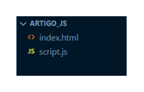
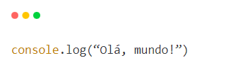

Responsible for the interactions and dynamism of the website
Used for evaluating and sending forms
Used to generate dynamic html
03) Separating JavaScript from HTML
As your algorithm grows, with a large HTML page and JavaScript code as well, it can be unfavorable to leave both together in the same file. So it would be nice if we could separate them into different files, wouldn't it?
And that's what we're going to learn now!
Step 01
Using the same algorithm where we print "Hello, world!" on our console, we can put it in a new file, with a .js extension, let's call it script.js. You will then have two files in your project, see the image below:

Step 02
Inside the 👇script.js file we´ll have the following content.

Step 03
And to reference our new Javascript file within the HTML code, we can use the src (source) attribute, within the script tag, to inform the path to our JavaScript code.👀 See below:

 Next on
Next on